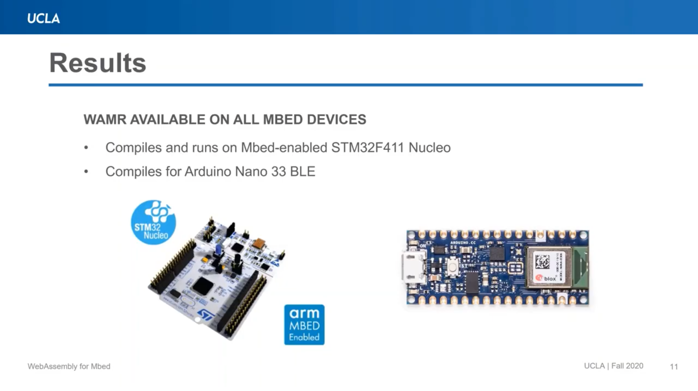
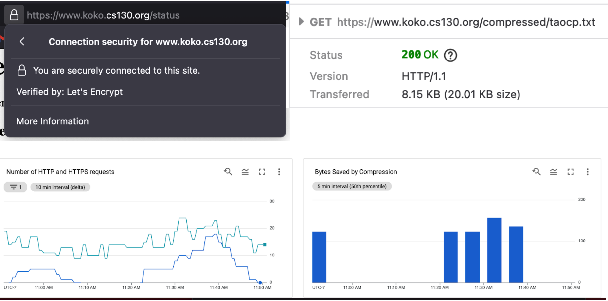
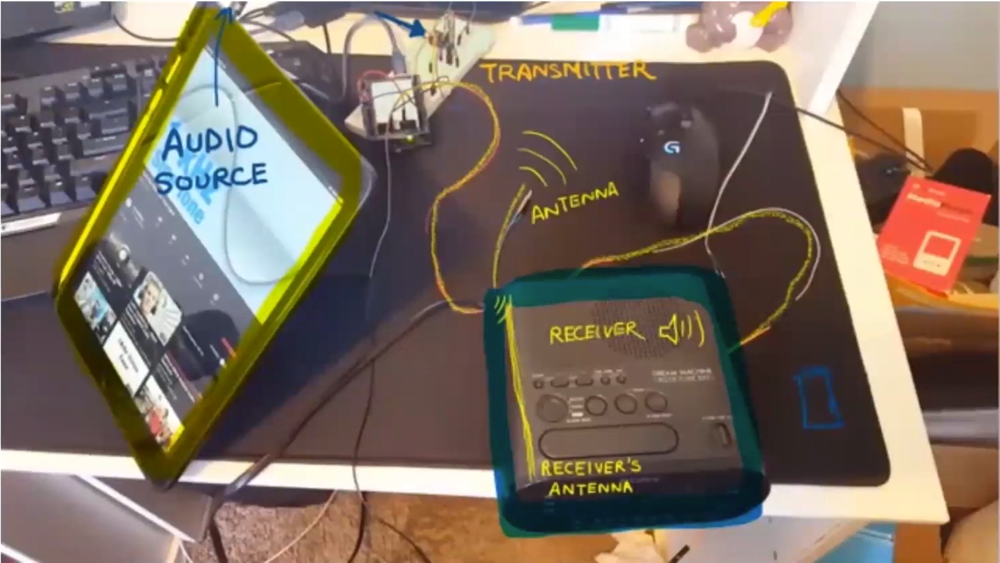
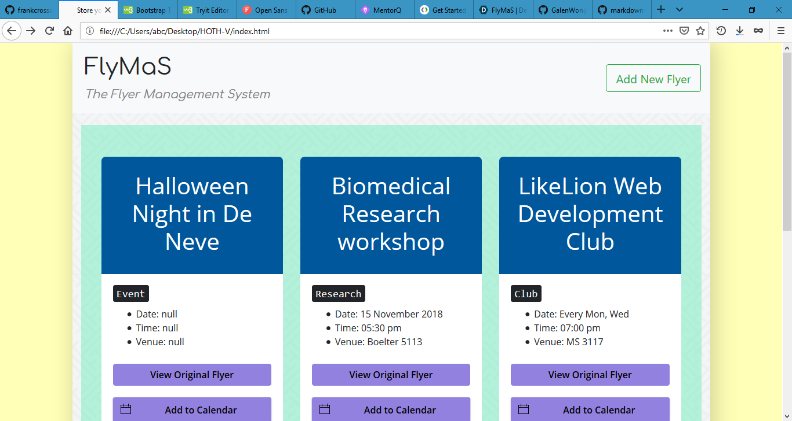

Recent projects
WebAssembly Runtime for Mbed OS
C++ WebAssembly CMake
Ported WebAssembly Micro Runtime (WAMR) to run on targets supported by ARM Mbed OS, a target OS which was not supported earlier. Demonstrated that the ported WAMR works by compiling to different targets and running on one. Measured execution time of WASM interpreters on various boards.
GitHub Repository Technical Approach Website Results Video› See results slide
Async C++ Server
C++ Boost Library Docker GCloud
An async webserver written in C++ using Boost Beast library. It can serve static files, compress responses, act as a proxy, it supports HTTPS (SSL) and can reuse connection using keep-alive.
GitHub Repository› See result
Open Source Projects
Python TypeScript Rust
Some of the PRs that got merged while I tried to learn a new language:
- http-rs/surf : #308
- microsoft/vscode: #80150
- vitaliymaz/vscode-svg-previewer: #34
- jpmorganchase/nbcelltests : #205 #206
I also made a VSCode Extention to make it easier to debug C/C++ programs which need flags to be passed in.
VSCode ExtentionAM Radio Transmitter
Arduino PWM
I made an Arduino to transmit AM Radio signals such that the transmitted audio can be played on any conventional AM Radio receiver. I also analysed the output of the radio receiver with Fourier Analysis to show that the frequency domain of the transmitted audio is the same as what we intended to send.
See Demo› See Setup
LikeLion at UCLA - Full Stack Web Development
JavaScript Ruby on Rails
While I was a part of the LikeLion Web Development club, I first learn about back-end web development. During my time there, I developed a CRUD application as a research-posting aggregator website with Ruby on Rails as the back-end.
Deployed on HerokuOlder projects
Pandemic Tennis 3D Game
JavaScript WebGL
Pandemic Tennis is 3D single-player table tennis. Socially distancing themselves during the pandemic, the player will be playing alone, hitting the ball to a wall, trying to not miss it.
Play Online GitHub RepositoryUCLA Study List Exporter
JavaScript Chrome Extension
Students complain about being forced to log in to my.ucla.edu every time to check their schedule and having to go through the multi-factor authentication each time, or look up the photo they took two months ago to check what class they have next. It also takes a significant amount of time to transfer your classes into a calendar manually, and having an app do it for you would be more efficient, which is exactly what this Chrome Extension does!
GitHub Repository› See image
Read the complete README at GitHub repository!

FlyMas: The Flyer Management Solution
JavaScript Google Vision API
The hundreds of flyers all around the campus inspired us to make this web app. We hate having the images of the flyers in our phones which we all eventually forget about. This app can easily obtain the date, time, venue and other useful information in a simplified format and automatically add it to our calendars. It uses Google Vision API to intelligibly extract the relevant information from the flyer, and it then presents neatly.
GitHub Repository› See image
Read the complete README at GitHub repository!
ACM TeachLA Dev Team
JavaScript React + Redux
ACM Teach LA is a nonprofit organization that teaches computer science to underserved students Los Angeles. I am a part of the developer team and so I help program an online IDE that allow our TeachLA students to develop, run, and save code online. See my recent pull requests:
- Profile image now does not collapse on small screens
- Font Awesome added to website
- Vertically centered aligned the radio buttons
Mathematical Expression Simplifying Program
C++
This program is a term-rewriting program which repeatedly applies all the available rules to the expression being simplified. The rules are maintained in a editable rule books, like arithmetic or boolean rule books. Rules in those files can be edited.
Algorithm Description GitHub Repository› See images
Read the complete README at GitHub repository!

Cellular Automata Simulator
C++
The program simulates the two simplest cellular automata: Conway's Game of Life and Wolfram's Elementary Cellular Automata. GUI interface in a command line environment.
Algorithm Description GitHub Repository› See images
See more images and read the complete README at GitHub repository!

Green Hills Software
Software Engineer Intern - Summer 2021Rust C Compiler Toolchains
Working with the Advanced Products Team. Making our Rust compiler use native INTEGRITY calls instead of using a POSIX layer.
GHS talk on RustVerkada
Embedded Systems Engineer Intern - Winter, Spring 2021Go C++ Yocto Bitbake Docker
Worked with the Camera Firmware team. Wrote Go services to mount filesystems, partition storage and setup encrypted volumes. Reproduced a bootloop bug on low power, and assisted hardware team by making tools to log SD card temperature. Assisted in new board bringup by modifying Bitbake recipes. Fixed bugs across Python, Go and C++ codebase and created test racks for new camera models.
Verkada Cameras Firmware TeamGreen Hills Software
Software Engineer Intern - Summer 2020C/C++
Worked in the Probe Team. Learned to use many features of advanced debuggers like MULTI by practicing debugging on large codebases like SQLite. Debugged a SoC failing GHS nightly validations. Increased performance by 4% of GHS MULTI Debugger. Built simplified software models of GHS Trace Decoders to characterize the performance difference seen when decoders were run on Windows vs. Linux
GHS ProbesCuneiform Digital Library Initiative (CDLI) at UCLA
Web Developer - Summer 2019JavaScript PHP Docker
The Cuneiform Digital Library Initiative (CDLI) has a rich collection of information for over 334,000 Assyriological artifacts. CDLI maintains a database where it records each artifacts period, place of origin and tablet writings among other data points. The temporal, geographic and textual data present for the artifact can be combined to render informative visualizations which would assist assyriologists around the world in their research.
GitLab Commits NEH Grant Work-Product